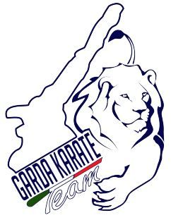

Karate
Ho fatto karate fino a poco prima di iniziare le superiori. Ho cominciato a Borgosatollo, dove ho imparato le basi, e poi ho continuato a Castenedolo. È stata una bella esperienza che mi ha insegnato l'impegno, il rispetto per gli altri e a non arrendermi.
Ecco il link al sito della federazione: Garda Karate Team
